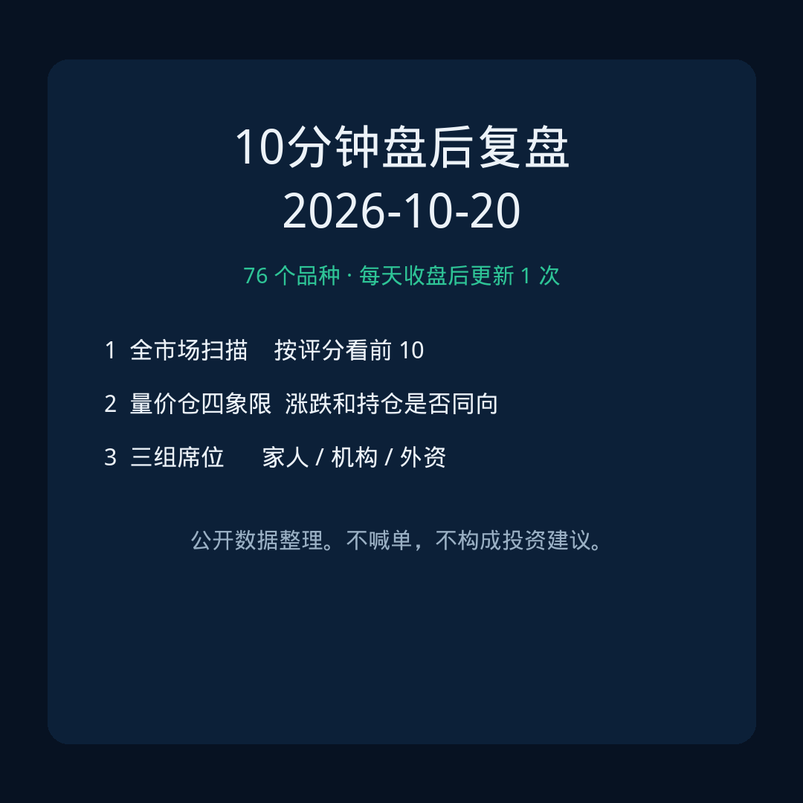
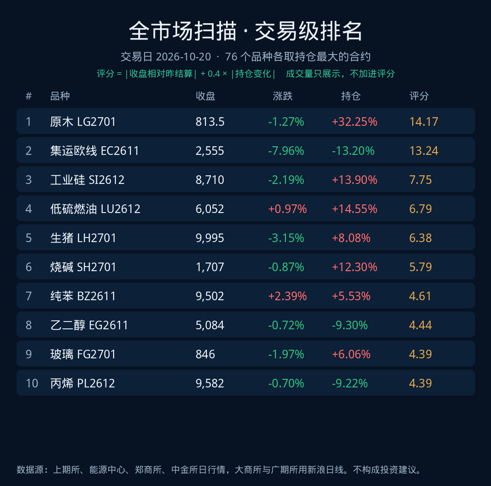
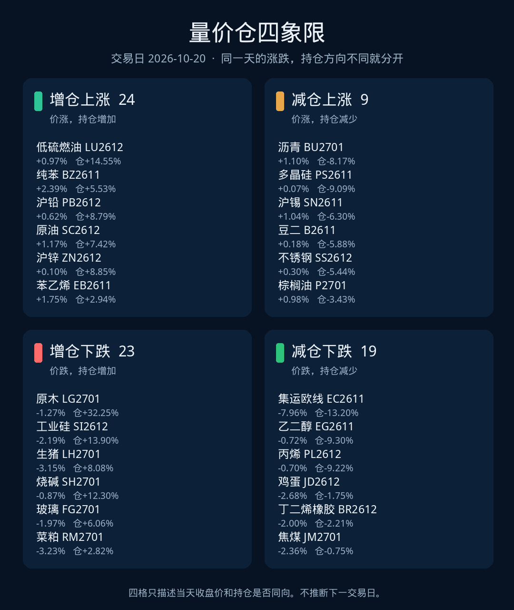
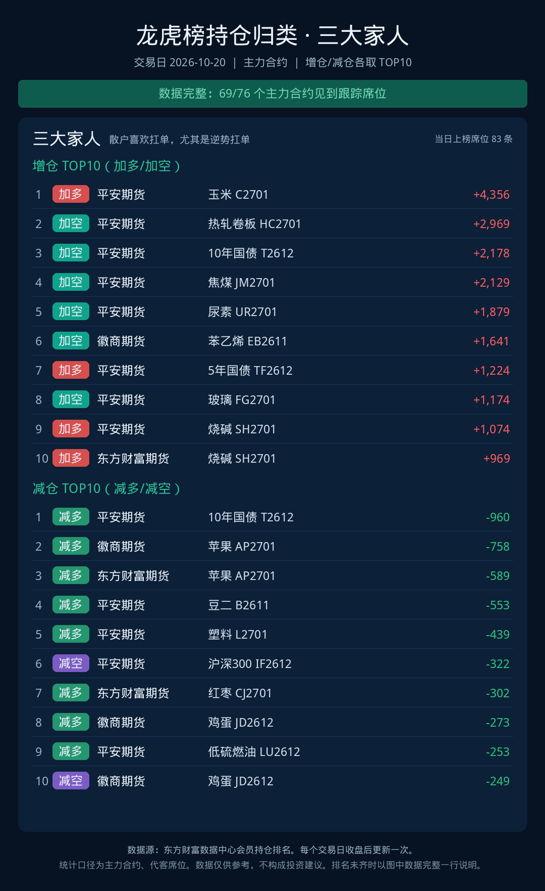
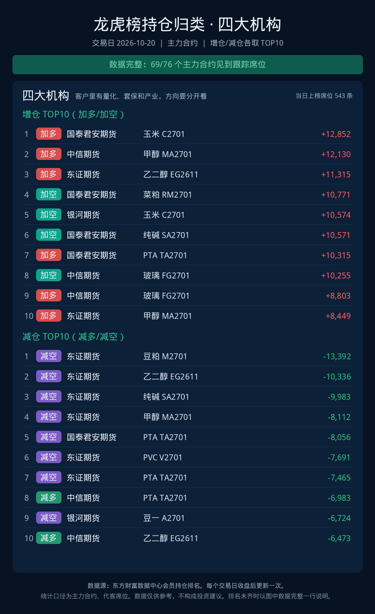
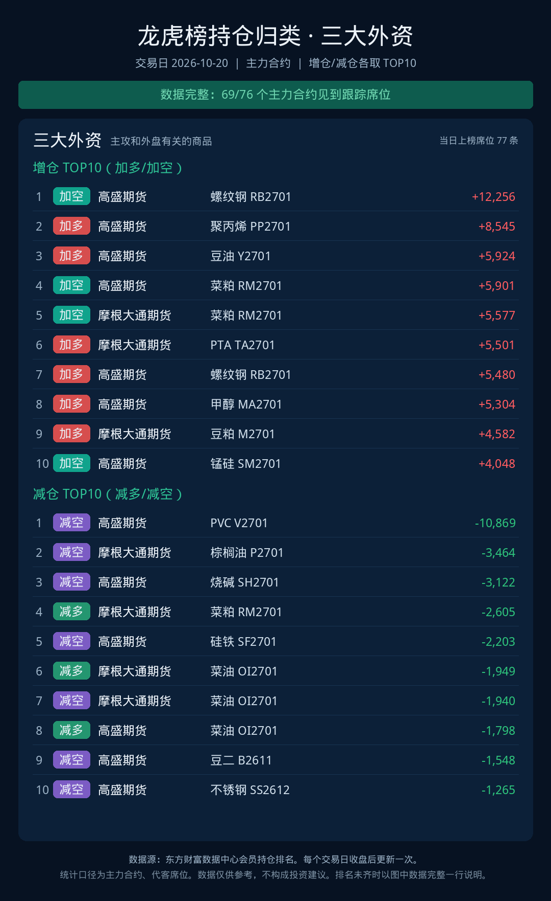

期货盘后复盘 · 每个交易日更新 1 次
2026-10-20
先看评分前 10，再看价格和持仓是否同向，最后看三组席位动了谁。评分 = |收盘相对昨结算| + 0.4 × |持仓变化|。成交量写在表里，不加进评分。不下结论，不构成投资建议。

1 全市场扫描
76 个品种，各取当天持仓最大的合约，成交量低于 5,000 手的不进榜。按评分从高到低。

| # | 品种 | 收盘 | 涨跌 | 持仓 | 成交量 | 评分 | 状态 |
|---|---|---|---|---|---|---|---|
| 1 | 原木 LG2701 | 813.5 | -1.27% | +32.25% | 6,323 | 14.17 | 增仓下跌 |
| 2 | 集运欧线 EC2611 | 2,555 | -7.96% | -13.20% | 22,633 | 13.24 | 减仓下跌 |
| 3 | 工业硅 SI2612 | 8,710 | -2.19% | +13.90% | 113,220 | 7.75 | 增仓下跌 |
| 4 | 低硫燃油 LU2612 | 6,052 | +0.97% | +14.55% | 135,878 | 6.79 | 增仓上涨 |
| 5 | 生猪 LH2701 | 9,995 | -3.15% | +8.08% | 170,782 | 6.38 | 增仓下跌 |
| 6 | 烧碱 SH2701 | 1,707 | -0.87% | +12.30% | 295,728 | 5.79 | 增仓下跌 |
| 7 | 纯苯 BZ2611 | 9,502 | +2.39% | +5.53% | 81,149 | 4.61 | 增仓上涨 |
| 8 | 乙二醇 EG2611 | 5,084 | -0.72% | -9.30% | 1,059,194 | 4.44 | 减仓下跌 |
| 9 | 玻璃 FG2701 | 846 | -1.97% | +6.06% | 1,014,567 | 4.39 | 增仓下跌 |
| 10 | 丙烯 PL2612 | 9,582 | -0.70% | -9.22% | 61,995 | 4.39 | 减仓下跌 |
| 11 | 沥青 BU2701 | 4,499 | +1.10% | -8.17% | 163,017 | 4.37 | 减仓上涨 |
| 12 | 菜粕 RM2701 | 2,274 | -3.23% | +2.82% | 891,955 | 4.36 | 增仓下跌 |
| 13 | 沪铅 PB2612 | 16,160 | +0.62% | +8.79% | 62,648 | 4.14 | 增仓上涨 |
| 14 | 原油 SC2612 | 727.2 | +1.17% | +7.42% | 146,437 | 4.14 | 增仓上涨 |
| 15 | 多晶硅 PS2611 | 34,760 | +0.07% | -9.09% | 32,597 | 3.71 | 减仓上涨 |
| 16 | 沪锌 ZN2612 | 25,600 | +0.10% | +8.85% | 103,745 | 3.64 | 增仓上涨 |
| 17 | 沪锡 SN2611 | 382,580 | +1.04% | -6.30% | 128,891 | 3.56 | 减仓上涨 |
| 18 | 鸡蛋 JD2612 | 3,194 | -2.68% | -1.75% | 547,279 | 3.38 | 减仓下跌 |
| 19 | 纸浆 SP2701 | 4,692 | -0.93% | +5.72% | 278,032 | 3.22 | 增仓下跌 |
| 20 | 苯乙烯 EB2611 | 10,436 | +1.75% | +2.94% | 989,724 | 2.92 | 增仓上涨 |
| 21 | 丁二烯橡胶 BR2612 | 15,685 | -2.00% | -2.21% | 84,234 | 2.88 | 减仓下跌 |
| 22 | 沪铝 AL2612 | 23,045 | +0.13% | +6.71% | 145,880 | 2.81 | 增仓上涨 |
| 23 | 焦煤 JM2701 | 1,407 | -2.36% | -0.75% | 497,893 | 2.66 | 减仓下跌 |
| 24 | 上证50 IH2612 | 2,717.6 | -0.93% | -4.32% | 43,304 | 2.65 | 减仓下跌 |
| 25 | 红枣 CJ2701 | 6,265 | -1.80% | -2.07% | 387,905 | 2.63 | 减仓下跌 |
| 26 | 硅铁 SF2701 | 5,812 | -0.68% | +4.86% | 168,767 | 2.63 | 增仓下跌 |
| 27 | 淀粉 CS2701 | 2,452 | +0.37% | +5.58% | 98,147 | 2.60 | 增仓上涨 |
| 28 | 棉纱 CY2701 | 21,675 | -1.14% | +3.58% | 13,190 | 2.57 | 增仓下跌 |
| 29 | 豆二 B2611 | 3,984 | +0.18% | -5.88% | 109,821 | 2.53 | 减仓上涨 |
| 30 | PVC V2701 | 4,994 | +1.42% | +2.75% | 1,873,574 | 2.52 | 增仓上涨 |
| 31 | 不锈钢 SS2612 | 13,345 | +0.30% | -5.44% | 170,381 | 2.47 | 减仓上涨 |
| 32 | 棕榈油 P2701 | 9,592 | +0.98% | -3.43% | 473,064 | 2.35 | 减仓上涨 |
| 33 | 锰硅 SM2701 | 5,818 | -1.26% | -2.61% | 231,383 | 2.30 | 减仓下跌 |
| 34 | 碳酸锂 LC2701 | 100,520 | +1.15% | +2.69% | 344,770 | 2.22 | 增仓上涨 |
| 35 | 苹果 AP2701 | 5,846 | -1.38% | -2.06% | 246,387 | 2.21 | 减仓下跌 |
| 36 | 焦炭 J2701 | 1,934 | -0.41% | -4.09% | 28,030 | 2.05 | 减仓下跌 |
| 37 | 对二甲苯 PX2612 | 9,430 | +0.17% | +4.57% | 185,637 | 2.00 | 增仓上涨 |
| 38 | 中证1000 IM2612 | 6,663.8 | +0.28% | -4.21% | 197,857 | 1.97 | 减仓上涨 |
| 39 | 2年国债 TS2612 | 102.7 | +0.03% | +4.72% | 56,161 | 1.92 | 增仓上涨 |
| 40 | 纯碱 SA2701 | 938 | -1.57% | +0.76% | 868,888 | 1.88 | 增仓下跌 |
| 41 | 液化气 PG2612 | 7,125 | -1.53% | +0.74% | 100,077 | 1.83 | 增仓下跌 |
| 42 | 棉花 CF2701 | 15,660 | -0.82% | +2.28% | 426,695 | 1.74 | 增仓下跌 |
| 43 | 30年期国债期货 TL2612 | 118.4 | +0.63% | +2.71% | 146,350 | 1.71 | 增仓上涨 |
| 44 | 甲醇 MA2701 | 3,157 | -0.69% | +2.51% | 2,146,072 | 1.70 | 增仓下跌 |
| 45 | 国际铜 BC2611 | 97,820 | -0.23% | -3.43% | 5,712 | 1.61 | 减仓下跌 |
| 46 | 瓶片 PR2612 | 8,060 | -0.17% | -3.55% | 67,858 | 1.59 | 减仓下跌 |
| 47 | 沪深300 IF2612 | 4,082.8 | -0.98% | -1.28% | 74,259 | 1.49 | 减仓下跌 |
| 48 | 黄金 AU2612 | 892.1 | -1.04% | -1.05% | 188,139 | 1.47 | 减仓下跌 |
| 49 | 燃料油 FU2701 | 4,976 | +0.38% | +2.66% | 493,047 | 1.45 | 增仓上涨 |
| 50 | 橡胶 RU2701 | 19,865 | +0.05% | +3.27% | 370,204 | 1.36 | 增仓上涨 |
| 51 | 沪镍 NI2612 | 117,930 | +0.97% | +0.81% | 72,249 | 1.29 | 增仓上涨 |
| 52 | 塑料 L2701 | 8,726 | +0.32% | +2.39% | 618,080 | 1.28 | 增仓上涨 |
| 53 | 豆一 A2701 | 5,382 | -0.79% | +1.04% | 268,132 | 1.21 | 增仓下跌 |
| 54 | 玉米 C2701 | 2,191 | +0.09% | +2.48% | 511,971 | 1.08 | 增仓上涨 |
| 55 | 10年国债 T2612 | 110.0 | +0.22% | +2.08% | 127,416 | 1.06 | 增仓上涨 |
| 56 | 中证500 IC2612 | 6,737.8 | -0.13% | -2.21% | 114,943 | 1.01 | 减仓下跌 |
| 57 | 白糖 SR2701 | 5,383 | -0.09% | +2.14% | 268,516 | 0.95 | 增仓下跌 |
| 58 | 短纤 PF2612 | 8,262 | +0.58% | +0.87% | 208,340 | 0.93 | 增仓上涨 |
| 59 | 沪铜 CU2612 | 108,830 | -0.30% | +1.45% | 57,561 | 0.88 | 增仓下跌 |
| 60 | 螺纹钢 RB2701 | 3,070 | -0.32% | +1.12% | 437,297 | 0.77 | 增仓下跌 |
| 61 | 20号胶 NR2612 | 16,935 | +0.53% | +0.55% | 72,461 | 0.75 | 增仓上涨 |
| 62 | 尿素 UR2701 | 1,689 | -0.53% | +0.19% | 104,431 | 0.61 | 增仓下跌 |
| 63 | 热轧卷板 HC2701 | 3,240 | -0.31% | +0.72% | 263,583 | 0.60 | 增仓下跌 |
| 64 | 菜油 OI2701 | 10,244 | -0.29% | +0.74% | 269,580 | 0.59 | 增仓下跌 |
| 65 | 豆油 Y2701 | 8,899 | +0.28% | -0.72% | 231,191 | 0.57 | 减仓上涨 |
| 66 | 花生 PK2612 | 7,872 | +0.00% | -1.26% | 50,786 | 0.51 | 持平 |
| 67 | PTA TA2701 | 6,488 | +0.12% | +0.95% | 888,377 | 0.50 | 增仓上涨 |
| 68 | 5年国债 TF2612 | 106.8 | +0.12% | +0.95% | 99,388 | 0.50 | 增仓上涨 |
| 69 | 铁矿石 I2701 | 681.5 | -0.15% | -0.61% | 199,493 | 0.39 | 减仓下跌 |
| 70 | 聚丙烯 PP2701 | 9,376 | -0.31% | +0.13% | 869,012 | 0.36 | 增仓下跌 |
| 71 | 豆粕 M2701 | 3,267 | -0.31% | -0.11% | 1,019,637 | 0.35 | 减仓下跌 |
| 72 | OP OP2612 | 3,672 | -0.27% | +0.18% | 6,342 | 0.35 | 增仓下跌 |
| 73 | 氧化铝 AO2701 | 2,628 | -0.30% | -0.08% | 111,007 | 0.33 | 减仓下跌 |
| 74 | 铸造铝 AD2612 | 22,875 | +0.02% | -0.52% | 10,489 | 0.23 | 减仓上涨 |
| 75 | 白银 AG2612 | 13,967 | +0.08% | +0.36% | 306,494 | 0.22 | 增仓上涨 |
| 76 | 铂 PT2612 | 403 | -0.15% | +0.12% | 5,322 | 0.20 | 增仓下跌 |
2 量价仓四象限
同一涨跌方向，持仓增加和持仓减少分开看。格子里是这个状态里评分最高的几个合约。

增仓上涨 · 24
价涨，持仓增加
- 低硫燃油 LU2612 +0.97% 仓+14.55%
- 纯苯 BZ2611 +2.39% 仓+5.53%
- 沪铅 PB2612 +0.62% 仓+8.79%
- 原油 SC2612 +1.17% 仓+7.42%
- 沪锌 ZN2612 +0.10% 仓+8.85%
减仓上涨 · 9
价涨，持仓减少
- 沥青 BU2701 +1.10% 仓-8.17%
- 多晶硅 PS2611 +0.07% 仓-9.09%
- 沪锡 SN2611 +1.04% 仓-6.30%
- 豆二 B2611 +0.18% 仓-5.88%
- 不锈钢 SS2612 +0.30% 仓-5.44%
增仓下跌 · 23
价跌，持仓增加
- 原木 LG2701 -1.27% 仓+32.25%
- 工业硅 SI2612 -2.19% 仓+13.90%
- 生猪 LH2701 -3.15% 仓+8.08%
- 烧碱 SH2701 -0.87% 仓+12.30%
- 玻璃 FG2701 -1.97% 仓+6.06%
减仓下跌 · 19
价跌，持仓减少
- 集运欧线 EC2611 -7.96% 仓-13.20%
- 乙二醇 EG2611 -0.72% 仓-9.30%
- 丙烯 PL2612 -0.70% 仓-9.22%
- 鸡蛋 JD2612 -2.68% 仓-1.75%
- 丁二烯橡胶 BR2612 -2.00% 仓-2.21%
3 三组席位
主力合约上，三大家人、四大机构、三大外资当天增仓和减仓各 10 条。单位是手。



扫描和四象限来自上期所（含能源中心）、郑商所、中金所每日行情，大商所和广期所来自新浪日线。席位来自交易所公布的会员持仓排名。持仓变化相对上一交易日。休市日页面留着上一个交易日。
发给客户、也请客户收藏的固定链接是 https://luo-lorry.github.io/arc/。不要收藏带日期的这一页，带日期的地址只保留 2026-10-20。